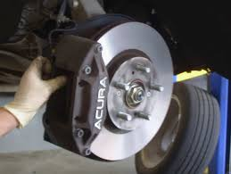
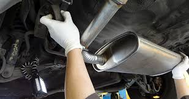
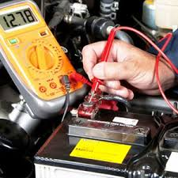

Automotive Services
| Image | Services Offered |
|---|---|
 |
Free Inspection Repair or replace Pads, Rotors, Calipers Fluid-Flush |
 |
Free Inspection Repair of replace Mufflers and Pipes, Cataylic Converters, O2 Sensors Emission Testing |
 |
Free Battery Check Diagnose faulty circuits Check Engine Light, ECM Check |
 |
Free Inspection Pressure test system Compressor, Airflow, Freon, Filter Temperature Test |
| Free Inspection Fluid top off or replace Oil, Brake, Powersteering, Transmissio, Differential, Windshield Washer |